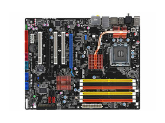

| AJÁNLAT | |||||||
|---|---|---|---|---|---|---|---|
 |
41.990.- | ||||||
| 1 x HDMI | 2 x USB 3.1 (10 Gbps) A típusú port | 1 x Optikai S/PDIF kimenet | 1 x DVI-D | 1x PS/2 billentyűzet/egér csatlakozó | 5 x Aranyozott audio jack | 2 x USB 3.0 port (kék) | 2 x USB 2.0 port (fekete) |
Az alaplapon a számítógép működéséhez szükséges áramkörök találhatóak. Egy részük fixen be van forrasztva, míg mások (pl. processzor, memóriák) csatlakozókban helyezkednek el. Az alaplap biztosítja az áramkörök közti kommunikációt és a arajta található csatlakozók révén modilárisan bővíthetővé teszi a számítógépet. Az alaplapon található a processzor foglalat, a memóriahelyek, a sínrendszerek vezérlő áramkörei, bővítőkártyák csatlakozói (videókártya, hangkártya), ROM BIOS (a bekapcsoláshoz szükséges program), CMOS RAM (a hardware működéséhez szükséges információk, pl az operációs rendszert tartalazó háttrétároló azonosítója), akkumulátor és órajel generátor
Mire kell figyelni a kiválasztásnál? Egy helyesen választott adatlap hosszú ideig társunk lesz, még akkor is, ha már minden mást lecseréltünk. Az alaplap határozza meg a gép főbb paramétereit: a platformot, az elérhető minimális és maximális teljesítményt, bővíthetőségeket, stb. Gyakori hiba, hogy az emberek olyan alaplapot választanak, amely szolgáltatásainak jelentős részét nem használják ki.
- Platform: Először az aktuális gépesítési keretet kell figyelembe vennünk, hogy milyen alaplap fér bele, és milyen processzort kínál a platform az adott árszinten - Méret: Ez határozza meg, hogy mekkora PC-t építünk. Ma már a kisebb alaplapok is képesek ugyanazt a teljesítményt hozni, mint a teljes méretű alaplapok. - Bővítő helyek: A régi PC-knél kritikus volt a bővítő helyek száma, ma viszont már ott tartunk, hogy minden olyan vezérlő, ami kritikus a sebesség szempontjából, egyenesen a processzor lapkájára került, a többi szolgáltatás pedig az alaplapon foglal helyet. Az alaplapi integrált vezérlők már mind vannak olyan jók, mint a külön kártyán kapható megoldások, csak proesszionális felhasználás mellett érdemes külön kiegészítőkhöz helyet fenntartani - Kompatibilitás: Ezzel tudjuk meghatározni, milyen sokáig tudjuk csupán 1-1 frissítéssel modernebbé és gyorsabbá tenni gépünket. Pár ezer forintért már kapható bármilyen kiegészítés PC-khez, amik ezt a folyamatot elősegíthetik egy kevésbé jövőálló gép esetébenJátékhoz optimalizált Intel B360 mATX alaplap előre felszerelt I/O-védőlemezzel, Aura Sync RGB LED kivezetéssel, két M.2-vel, SATA 6 Gbps és USB 3.1 kivezetéssel, DDR4 foglalattal, HDMI és DVI csatlakozással LGA1151 foglalat: Készen áll a 8. generációs Intel® Core™ asztaligép-processzorok fogadására.
Aura Sync RGB: Szinkronizálja a LED-megvilágítást a kompatibilis PC-s kiegészítők nagy választékával, az RGB LED-szalagokat is ideértve. Egyszerű gépépítés: Előre felszerelt I/O védőlemez, ASUS SafeSlot és felsőkategóriás összetevők a maximális strapabíráshoz. Fejlett hűtés: Automatizált rendszerszintű hűtés, a saját felszereléshez szabott hűtési profilokkal. Hang játékhoz: A SupremeFX S1220A és a Sonic Studio III kettőse remek térérzetű hangot eredményez. Játékkapcsolat: Két M.2, valamint USB 3.1 Gen 2 Type-A csatlakozók. Hálózat játékhoz: Intel Gigabit Ethernet, LANGuard és GameFirst a simább, biztonságosabb, akadásmentes online játékhoz
| AJÁNLAT | ||||||||
|---|---|---|---|---|---|---|---|---|
|  | 20.900.- | |||||||
| Chipset: Intel® P35 / ICH9 with Intel® Fast Memory Access Technology | FSB támogatás: 1333 / 1066 / 800 | Memória/DDR2: 4 memóriahely, max. 4GB, 1333/1066/800MHz, Dual Channel | Memória/DDR3: 2 memóriahely, max. 8GB, 1066/800/667 MHz | Tárolás: 1xUDMA, 4xSATA 3Gb/s, 1 x External SATA 3.0 Gb/s | port (SATA On-the-Go), Supports SATA RAID 0,1 and JBOD | Hálózat: Gigabit LAN | Audio: 8 csatornás Realtek | Operációs rendszerek: Windows Vista/XP |
Nosztalgikus emlékeket ébreszthet bennünk a P5KC, mivel – hibrid alaplap lévén – a DDR2 és DDR3 memóriafoglalat egyaránt megtalálható rajta, ezáltal az új memóriatípusra fokozatosan is áttérhetünk. Hasonló típusú kettős technológia alkalmazása manapság nemhogy ritkának, hanem kivételesnek számít, a DDR3 vártnál lassabb terjedése azonban mégis ilyen megoldásra készteti a gyártókat.
Igaz, e kettősség nemcsak az ASUS vagy a többi alaplapkészítő érdeme (sok nagy cég állít elő hasonló hibrid alaplapot), hanem az Intelé is, ahol bizonyára már előre számoltak a DDR3 elterjedése körüli nehézségekkel, ezért a P35 lapkakészletet már ebben a szellemben fejlesztették ki. Természetesen a két különböző típusú memóriamodul egyszerre nem használható (nem úgy, mint például az EDO és SD RAM idejében).
Kissé részrehajló – de a mai memóriaárakat és a bővítés menetét figyelembe véve érthető – módon a P5KC-n összesen négy DDR2 és csak két DDR3 foglalatot találunk, amelyek kicseréléséhez a grafikus kártyát nem kell eltávolítanunk – ez is segítség a bővítés során. Sajnos ami az előnye, az egyszersmind a hátránya is, mivel emiatt a ×16 PCI Express foglalat lejjebb került, a PCI-bővítőhelyek kárára. A P35 lapkakészlet támogatja a JEDEC által bejegyzett és jóváhagyott DDR2 memória-órajeleket, így remélhetőleg a későbbiekben sem lesz probléma az átállással.
Leszámítva a PCI és PCI Express foglalatok elhelyezését, a P5KC felépítése és felszereltsége árához mérten megfelelő, de az ASUS ebben a kategóriában nem kényeztet bennünket extrákkal. Az alaplap színe a gyártótól megszokott fekete, hűtését pedig passzív hűtőbordák látják el. A hátoldalra pillantva meglepődve konstatáltuk, hogy elhagyták az egér számára fenntartott PS2 foglalatot: helyét két USB-kapu vette át.